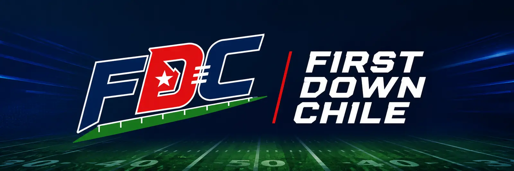
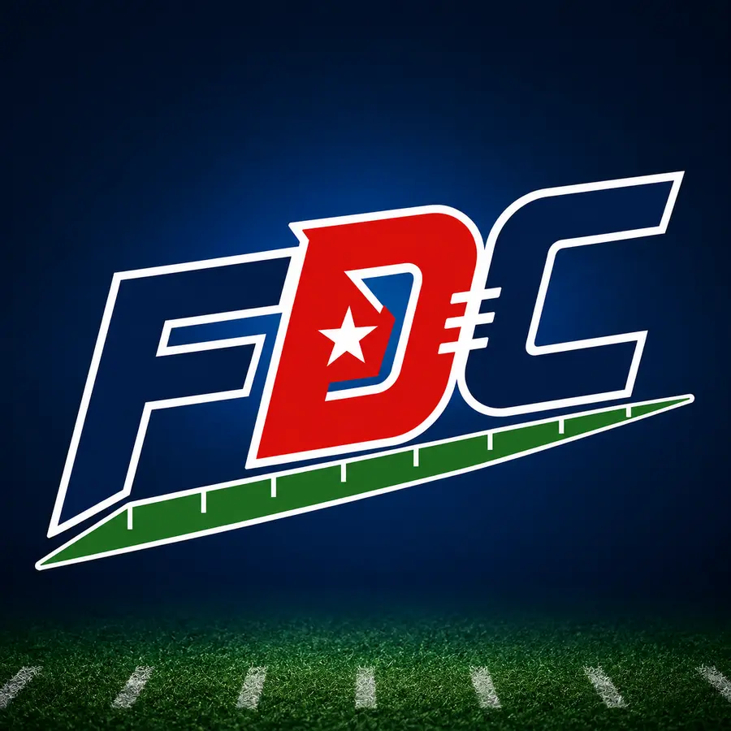

Guía 2026
Todo el calendario convertido automáticamente a hora de Chile
Revisa cada semana, filtra por equipo y descarga tus partidos para no perderte ningún kickoff.
Cambia entre AFC y NFC para revisar cada división, los 32 equipos y su récord de temporada regular.
AFC East · North · South · West
Toca los equipos que crees que clasificarán en cada conferencia (en el orden que crees que van a quedar sembrados), y mira cómo se arma tu bracket en vivo. Después avanza ronda por ronda y descárgalo como imagen para compartirlo.
Elige una franquicia y revisa sus jugadores nombre por nombre, ordenados por posición. Ideal para entender quién está en cada plantel sin salir de First Down Chile.
Los mejores de la temporada en cada categoría, actualizados en vivo directo desde nflverse — sin datos fijos, siempre al día.
Elige una semana o tu equipo y revisa los 272 partidos convertidos a hora de Chile, con líneas de apuesta cuando estén disponibles.
Los 48 partidos de exhibición más el Hall of Fame Game, en horario chileno. Navega por semana y revisa cada jornada día por día.
Lo básico para entender un partido de NFL, explicado en español simple.
Supera el Draft y elige entre jugar semana a semana o simular una temporada completa. Construye tu fama, gana premios y conquista a la hinchada.
Personaliza tu identidad, el dorsal y el equipo que te seleccionará. Tu rendimiento en las pruebas seguirá definiendo la ronda y el pick del Draft.
Completa las cuatro pruebas. Tus atributos influyen, pero cada intento también tiene presión e incertidumbre.
Los equipos quieren saber cómo piensas bajo presión. Cada respuesta puede cambiar tu proyección.
Tu Combine y tus entrevistas ya están evaluados. Presiona el botón para conocer la ronda, el pick y el equipo que eligió a tu prospecto.
Puedes cambiar de modo más adelante sin perder tu jugador, equipo, contrato ni progreso.
El rendimiento se calcula según tu valoración, confianza y fama. Verás el récord, los playoffs, premios y mejoras al instante.
Cada 100 XP entrega un punto de mejora. Tú decides en qué atributo invertirlo.
Cómo termina cada temporada la NFL alrededor de tu carrera.
Tu rendimiento definió el interés de la liga. Compara dinero, años y rol antes de firmar.
| T° | Edad | Equipo | Récord | Resultado | Premios |
|---|
Elige cómo afrontar la jugada.


Calendario completo, próximos partidos, posiciones y una guía clara para vivir la temporada desde Chile.
Elige una semana o tu equipo y revisa todos los partidos convertidos a hora de Chile.
Todo lo que se juega hoy, con hora de Chile y línea de apuestas.
Crea a tu jugador, elige una posición, entrena y toma las decisiones que pueden convertirte en Novato del Año.
Elige tus equipos ronda por ronda, mira el cuadro de playoffs armarse en vivo y descarga tu bracket para compartirlo.
Elige tu equipo y guarda las noticias que quieras volver a leer.
Gráficas, previas y datos de la NFL, en español y desde Chile. Únete a @firstdownchile.
Una portada separada para leer la actualidad sin perder el foco principal del calendario.
Actualidad, calendario y análisis explicados desde Chile
Gráficas, previas y datos de la NFL, en español y desde Chile. Únete a @firstdownchile.
Contenido útil pensado para aficionados en Chile
Revisa cada semana, filtra por equipo y descarga tus partidos para no perderte ningún kickoff.
Downs, anotaciones, posiciones y castigos explicados en lenguaje sencillo.
Usa el selector de equipos para ver rivales, estadios, horarios y semanas de descanso.